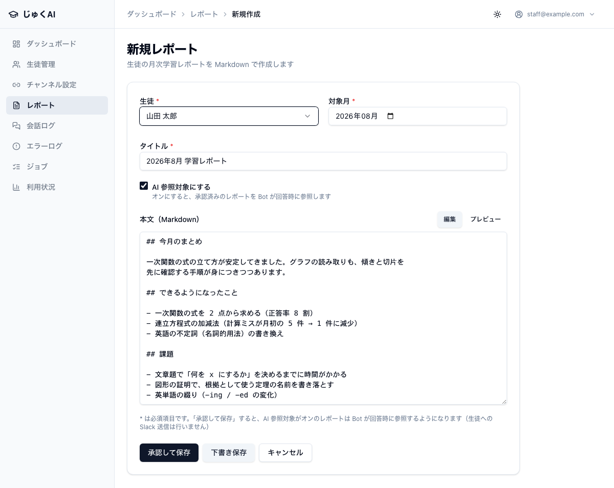
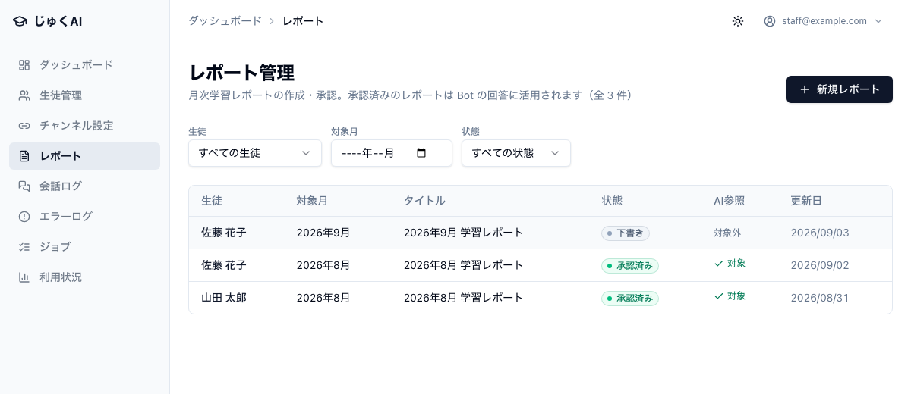
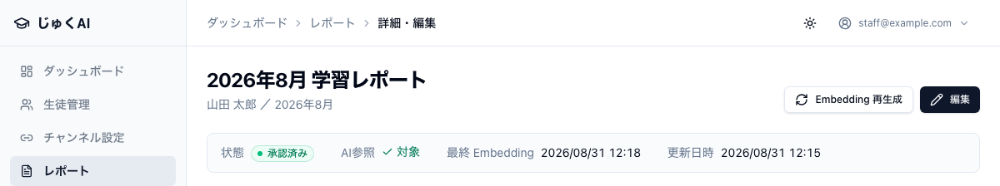
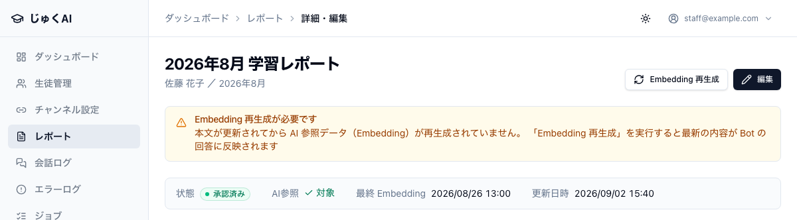

この章で分かること
生徒ごと・月ごとの学習記録です。スタッフが手で書きます。 承認すると、それ以降の回答で AI がこのレポートを参照するようになります。
スタッフがレポートを書く
↓
「承認して保存」を押す
↓
AI が読める形に変換される（自動・数秒〜）
↓
生徒が質問する
↓
質問に関係のある部分だけがレポートから探し出され、
AI の回答に使われる
↓
「今月のレポートを見る限り、〜が課題だったね」のように、
どこから持ってきた情報かが分かる形で答えに現れる「承認」しても、生徒や保護者には自動で送られません。 承認は「AI がこのレポートを読めるようにする」という意味だけです。 生徒・保護者への配布は、これまでどおり塾の方法（面談・紙・メールなど）で行ってください （第 6 章「今はできないこと」）。
レポート（開くと「レポート管理」）→ 右上の 新規レポート。

| 入力欄 | 必須 | 入れる値 |
|---|---|---|
| 生徒 | 必須 | 対象の生徒。あとから変更できません |
| 対象月 | 必須 | どの月のレポートか。あとから変更できません |
| タイトル | 必須 | 例：2026年6月 学習レポート |
| AI 参照対象にする | — | 最初からオンになっています。オンのまま承認すると AI が読めるようになります |
| 本文 | 任意 | その月の学習内容。箇条書きで十分です |
本文欄の右上に 編集 / プレビュー の切り替えがあります。プレビューを押すと仕上がりが確認できます。
行頭に記号を付けると、見出しや箇条書きになります（覚える必要はありません。ふつうの文章でも大丈夫です）。
# 2026年6月 学習レポート
## 今月やったこと
- 数学：二次方程式（解の公式まで）
- 英語：不定詞、関係代名詞の導入
## できるようになったこと
- 解の公式を使った計算はほぼ正確にできる
## 次の課題
- 文章題で式を立てる部分。「何を x にするか」で止まることが多い
- 英語は長文になると単語で詰まる| ボタン | 意味 | AI は読むか |
|---|---|---|
| 下書き保存 | 書きかけの状態で保存する | 読みません |
| 承認して保存 | 内容を確定して、AI が読める状態にする | 読みます（AI 参照対象がオンのとき） |
画面の下にはこう書かれています。
「承認して保存」すると、AI 参照対象がオンのレポートは Bot が回答時に参照するようになります（生徒への Slack 送信は行いません）
本文の途中で Enter キーを押しても、うっかり「承認」されることはありません（下書き保存として扱われます）。 書きかけの内容が AI に読まれてしまうのを防ぐためです。
| 効きにくい書き方 | 効く書き方 |
|---|---|
よく頑張りました。この調子で続けましょう。 |
二次方程式の計算は安定。文章題は「何を x にするか」で止まることが多い。 |
数学：教科書 p.40〜52 |
数学：二次方程式（解の公式まで）。因数分解に戻ると解ける問題もあるので、両方の見分けが課題。 |
英語の成績が上がりました。 |
英語：不定詞の 3 用法は見分けられるようになった。関係代名詞は導入したばかりで、まだ自分では書けない。 |
ポイントは 「何をやったか」＋「どこまでできて、どこで止まるか」 です。 AI はこれを読んで「この生徒はここまで来ている」と判断して回答を組み立てます。
本文にも生徒の氏名は書かないでください。
承認したレポートは、質問に関係する部分が抜き出されて AI に渡ります。
そのとき氏名が書いてあれば、氏名も一緒に渡ってしまいます。
生徒を指すときは 「本人」「この生徒」 と書いてください。
タイトルも 2026年6月 学習レポート のように、氏名を入れない形にしておくと安全です
（誰のレポートかは「生徒」欄で分かります）。
承認するとすぐに、AI が探せる形への変換が自動で始まります。 これが終わっていないと、レポートは回答に使われません。必ず確認してください。
用語の補足：Embedding（エンベディング）
管理画面に出てくる言葉です。「AI が過去のレポートの中から、質問に関係のある部分を探せるようにする下準備」のことです。
文章を AI が比べやすい形に置き換える処理で、レポートを保存すると自動で走ります。
スタッフが中身を知る必要はありませんが、「これが終わっていないと AI はレポートを読めない」ことだけ覚えてください。
| 場所 | 正常な表示 |
|---|---|
| レポート一覧の 状態 列 | 承認済み（緑） |
| レポート一覧の AI参照 列 | ✓ 対象（緑）。対象外なら AI は読みません |
| レポート詳細の 最終 Embedding | 日時が入っている。未生成 のままなら AI はまだ読めません |


レポート詳細に次の警告が出ることがあります。
Embedding 再生成が必要です
本文が更新されてから AI 参照データ（Embedding）が再生成されていません。 「Embedding 再生成」を実行すると最新の内容が Bot の回答に反映されます
この場合、ページ右上の「Embedding 再生成」ボタンを押してください。 押すと変換がやり直され、警告が消えて「最終 Embedding」の日時が新しくなります。

また、保存した直後に次のような通知が出ることがあります。
保存しました（AI 参照データは未更新）
Embedding の自動再生成に失敗しました。詳細ページから手動で再生成してください
この場合も、そのレポートの詳細ページを開いて Embedding 再生成 を押します。
再生成を押しても「最終 Embedding」が「未生成」のままの場合は、開発者に連絡してください。 レポートを書いても AI が読めていない状態が続いてしまいます（第 5 章）。
レポートを直したときも同じです。本文を編集して保存すると、AI 用の変換が自動でやり直されます。 編集ページには「保存時に AI 参照データ（Embedding）が自動的に再生成されます」と書かれています。 念のため、保存後に 最終 Embedding の日時が新しくなっているか見てください。
レポートは何ヶ月ぶんでも積み重ねられます。過去のレポートも承認されていれば参照対象です。 その中から、質問に関係のある部分だけが選ばれて使われます。